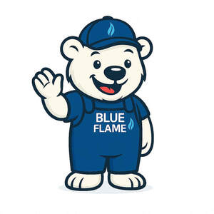

Trade Mark Journal No.2025/033 15 August 2025
UK00004244866 5 August 2025 (25,35)

- Class 25
- T-shirts; Tee-shirts; Shirts; Short-sleeved T-shirts; Printed t-shirts; Sweatshirts; Long-sleeved shirts; Short-sleeved shirts; Turtleneck shirts; Short-sleeve shirts; Open-necked shirts; Camouflage shirts; Hoodies; Sweat shirts; Sports shirts; Dress shirts; Casual shirts; Woven shirts; Collared shirts; Polo shirts; Wristbands [clothing]; Shirts and slips; Jerseys [clothing]; Tank-tops; Pique shirts; Hooded sweat shirts; Sleep shirts; Shorts [clothing]; Night shirts; Bandanas; Headbands [clothing]; Headbands for clothing; Sleeveless jerseys; Jackets (Stuff -) [clothing]; Stuff jackets [clothing]; Bandanas [neckerchiefs]; Hooded sweatshirts; Bandannas; Jackets [clothing]; Embroidered clothing; Jerseys; V-neck sweaters; Shirt fronts; Sweaters; Sleeved jackets; Wristbands; Undershirts; Bib shorts; Beanies; Beanie hats; Jackets being sports clothing; Tops [clothing]; Fleece shorts; Playsuits [clothing]; Sleeveless jackets; Collars [clothing]; Sweatpants; Quilted jackets [clothing]; Tracksuits; Button down shirts; Shorts; Scarves; Stuff jackets; Jeans; Hats; Bottoms [clothing]; Headbands; Visors [clothing]; Polo sweaters; Turtleneck sweaters; Sweatbands; Sleeveless pullovers; Gloves for apparel; Trousers shorts; Mitts [clothing]; Knitted clothing; Chaps (clothing); Layettes [clothing]; Hooded pullovers.
- Class 35
- Distribution of flyers, brochures, printed matter and samples for advertising purposes; Advertising; Advertising and marketing; Advertising copywriting; Advertising and advertisement services; Advertising and publicity; Publicity and advertising; Advertising and marketing services; Advertising, promotional and marketing services; Advertising, marketing and promotional services; Marketing, advertising, and promotional services; Banner advertising; Television advertising; Advertising services of a radio and television advertising agency; Advertising and marketing consultancy; Advertising, marketing and promotion services; Marketing, advertising and promotion services; Advertising and promotional services; Promotional and advertising services; Promotional advertising services; Advertising and publicity services; Leasing of advertising billboards; Online advertising; Newspaper advertising; Advertising agencies; Hire of advertising billboards; Advertising services; Copywriting for advertising and promotional purposes; Electronic billboard advertising; Recruitment advertising; Promotion [advertising] of business; Radio advertising; Promotion, advertising and marketing of on-line websites; Leasing of advertising hoardings; Mail-order advertising; On-line advertising and marketing services; Magazine advertising; Cinema advertising; Advertising and promotion services; Outdoor advertising; Advertising research; On-line advertising; Radio advertising and commercials; Hire of advertising hoardings; Promotion [advertising] of travel; Advertising services provided by a radio and television advertising agency; Advertising of cinemas; Design of advertising flyers; Graphic advertising services; Distribution of advertising, marketing and promotional material; Advertising services for the promotion of e-commerce; Advertising agency services; Digital advertising services; Dissemination of advertising, marketing and publicity materials; Design of advertising brochures; Classified advertising; Rental of advertising space on the Internet for employment advertising; Distribution of advertising brochures; Modelling for advertising or sales promotion; Advertising planning; Preparation of advertising campaigns; Arrangement of advertising; Modeling for advertising or sales promotion; Advertising consultation; Advertising analysis; Online advertising services; Consultancy services relating to advertising, publicity and marketing; Response advertising; Rental of billboards [advertising boards]; Political advertising services; Advertising flyer distribution; Rental of advertisement space and advertising material; Press advertising services; Modeling services for advertising or sales promotion; Advertising services for the promotion of beverages; Scriptwriting for advertising purposes; Advertising, promotional and public relations services; Production of advertising matter and commercials; Elevator advertising; Services of advertising agencies; Advertising research services; Research services relating to advertising and marketing; Press advertising consultancy; Design of advertising logos; Distribution of advertising announcements; Brand creation services (advertising and promotion); Dissemination of advertising and promotional materials; Classified advertising services; Hiring of advertising materials; Direct market advertising; Advertising for others; Promotional advertising for exploration projects; Advertising, including on-line advertising on a computer network; Exhibitions for commercial or advertising purposes; Promotional marketing; Radio and television advertising; Post-production editing of advertising or commercials; Rental of advertisement billboards; Advertisement billboards (Rental of -); Market research for advertising; Distribution of advertising leaflets; Distribution of advertising materials; Web indexing for commercial or advertising purposes; Consultancy relating to advertising; Advertising and marketing services provided by means of social media; Rental of advertising material; Advertising of business web sites; Advertising text publication services; Advertising services for the literary industry; Planning services for advertising; Advertising services relating to newspapers; Publication of advertising literature; Arranging of advertising in cinemas; Design of advertising materials; Advertising, marketing and promotional consultancy, advisory and assistance services; Production of advertising materials; Marketing; Advertising and marketing services provided by means of blogging; Distribution of advertising mail and of advertising supplements attached to regular editions; Rental of signs for advertising purposes; Modelling agency services for advertising purposes; Advertising matter (Production of -); Production of advertising matter; Organisation of customer loyalty programs for commercial, promotional or advertising purposes; Publication of advertising texts; Distribution of products for advertising purposes; Organisation of exhibitions for commercial and advertising purposes; Organisation of exhibitions for commercial or advertising purposes; Advertising flyer distribution for others; Modelling and models for advertising or sales promotion; Advertising particularly services for the promotion of goods; Advertising services to promote the sale of beverages; Advertising services to create corporate and brand identity; Brand positioning; Advertising services to create brand identity for others; Brand strategy services; Brand positioning services; Influencer marketing; Product marketing; Business marketing consultancy; Marketing consultancy; Developing promotional campaigns for business; Marketing consulting; Brand creation services; Business marketing services; Digital marketing; Design of marketing surveys; Consultancy relating to the organisation of promotional campaigns for business; Promotional marketing services using audiovisual media; Consultancy regarding advertising communications strategy; Consultancy relating to business advertising; Targeted marketing; Marketing services; Business marketing consulting services; Copywriting; Corporate identity services; Marketing agency services; Brand evaluation services; Investigations of marketing strategy; Consultancy relating to marketing; Business marketing consultation services; Development of marketing concepts; Event marketing; Customer loyalty services for commercial, promotional and/or advertising purposes; Creative marketing plan development services; Business advertising services relating to franchising; Product merchandising; Development of advertising concepts; Consumer profiling for commercial or marketing purposes; Brand testing; Consultancy regarding advertising communication strategies; Business consultancy services relating to the marketing of fund raising campaigns; Providing marketing consulting in the field of social media; Developing promotional campaigns for businesses; Business merchandising display services; Referral marketing; Providing business marketing information; Business advice relating to strategic marketing; Marketing management advice; Development of promotional campaigns; Promotional management for sports personalities; Planning of marketing strategies; Development of marketing strategies and concepts; Direct marketing consulting; Trade marketing [other than selling]; Consultancy relating to advertising and promotion services; Professional consultancy relating to marketing; Consultancy relating to demographics for marketing purposes; Corporate management consultancy; Affiliate marketing; Providing advice in the field of business management and marketing; Advertising and marketing services provided via communications channels; Business consultation relating to advertising; Marketing analysis; Business advice relating to marketing; Marketing (Business advice relating to -); Business strategy services; Promotional management of celebrities; Business assistance relating to corporate identity; Customer club services, for commercial, promotional and/or advertising purposes; Marketing research; Online marketing; Internet marketing; Marketing forecasting; Financial marketing; Marketing studies; Marketing information; Direct marketing; Marketing advice; Marketing research services; Marketing assistance; Database marketing; Marketing plan development ; Consultancy services in the field of affiliate marketing; Direct marketing services; Marketing analysis services; Advice in the field of business management and marketing; Recruitment services for sales and marketing personnel; Marketing advisory services; Planning services for marketing studies; Consulting services in the field of Internet marketing; Marketing consultation services; Marketing research and analysis; Marketing research or analysis; Preparation of marketing surveys; Market research and marketing studies; Publicity and sales promotion services; Consulting services relating to marketing; Marketing in the framework of software publishing; Information or enquiries on business and marketing; Marketing services in the field of travel; Rental of all publicity and marketing presentation materials; Publicity and sales promotion; Advice relating to marketing management; Conducting of marketing studies; Conducting marketing studies; Search engine marketing services; Administration relating to marketing; Sales promotion using audiovisual media; Preparation of marketing plans; Estimations for marketing purposes; Consulting in sales techniques and sales programmes; Business advice relating to marketing management consultations; Analysis relating to marketing; Marketing services in the field of web site traffic optimization; Marketing services in the field of restaurants; Marketing services in the field of dentistry; Preparation of reports for marketing; Sales promotion; Advisory services relating to marketing; Business consultancy (Professional -); Business promotion; Business organisation consulting; Business organization and management consulting; Business and market research; Business project management; Business strategy development services; Development of concepts for business economy; Business management services relating to the development of businesses; Business consultancy services relating to product development; Commercial business management; Business planning and business continuity consulting; Business management consultancy in the field of executive and leadership development; Business management advice relating to manufacturing business; Business project management services; Business research; Research (Business -); Business process management; Business consultancy; Business research services; Business management services; Management assistance for promoting business; Assistance with business management; Business promotion services.
Blue Flame Gas Solutions Ltd